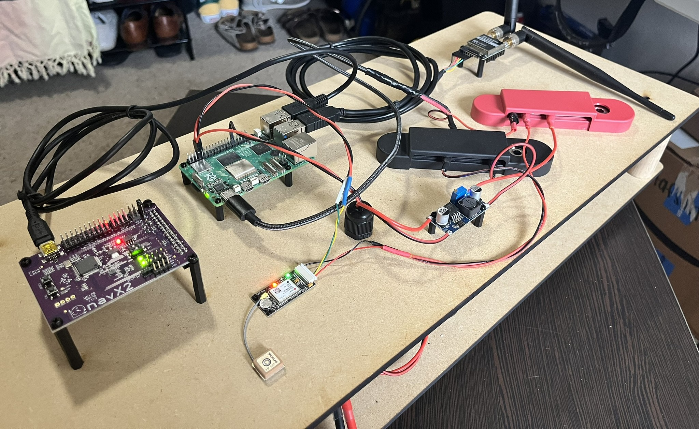
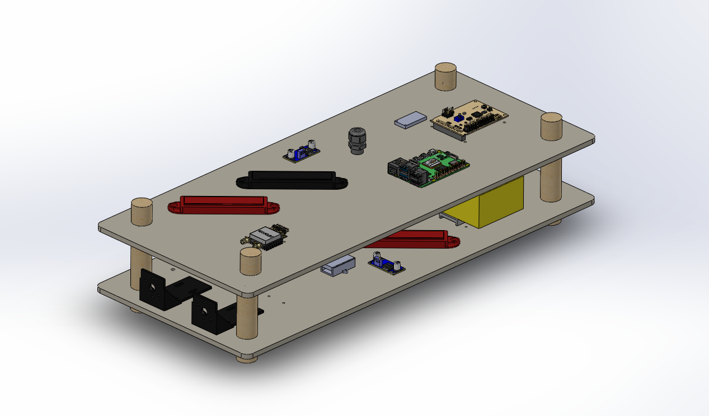
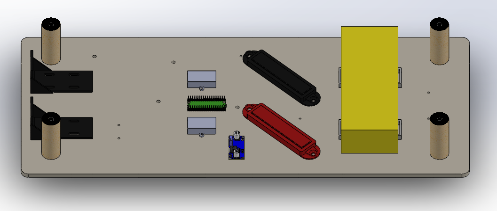

Engineering
The Platform
A ground-up design built for real-world autonomous surface operations. Every subsystem engineered for reliability, modularity, and scalable deployment.
Hardware
Benchtop Prototype

GT-ASV-001 // Benchtop Prototype // Active Development
Status
Working Prototype — Active Development
The current benchtop prototype validates core subsystem integration: power distribution, embedded compute, sensor interfacing, and motor control. Hardware-in-the-loop testing is ongoing.
Platform Type
Twin-hull catamaran ASV
Compute
[Embedded compute module]
Propulsion
[Motor / thruster config]
Power
[Battery type / capacity]
Sensors
[IMU, GPS, camera, etc.]
Comms
[Radio / WiFi / cellular]
Build Status
✓ Prototype Complete
Design
CAD Model
The CAD model is a 1:1 representation of the physical prototype, designed for manufacturability and modular reconfiguration.

Isometric View
Top Layer

Bottom Layer
📐
Add CAD screenshot
cad-exploded.png
Exploded View
Development
Roadmap
✓
Phase 01 — Complete
Benchtop Prototype
Core subsystem integration validated. Power, compute, sensors, and motor control operating as an integrated system on the bench.
→
Phase 02 — In Progress
Water Trials & Control System Tuning
First in-water tests. Validating buoyancy, propulsion authority, and closed-loop heading control in real conditions.
03
Phase 03 — Planned
Autonomous Navigation Demo
Full waypoint mission execution with onboard obstacle avoidance. First end-to-end autonomous run for investor and partner demonstration.
04
Phase 04 — Planned
Payload Integration & Field Deployment
First modular payload mission. Targeting environmental monitoring use case with a partner organization for real-world data collection.